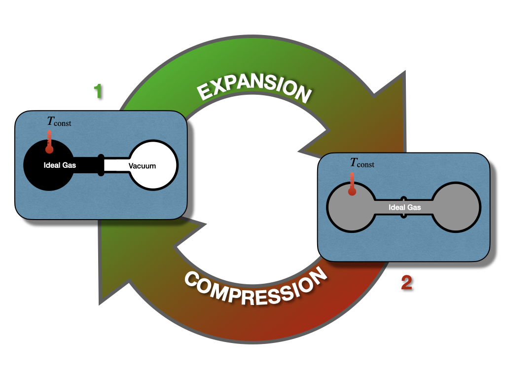
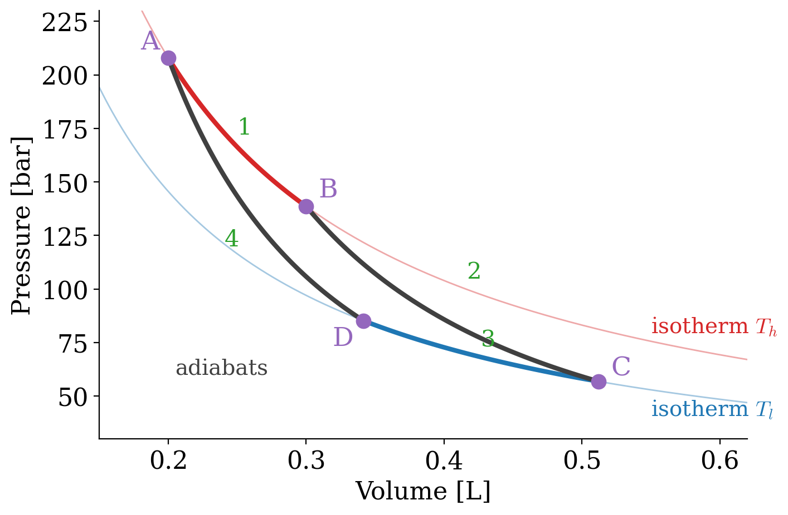
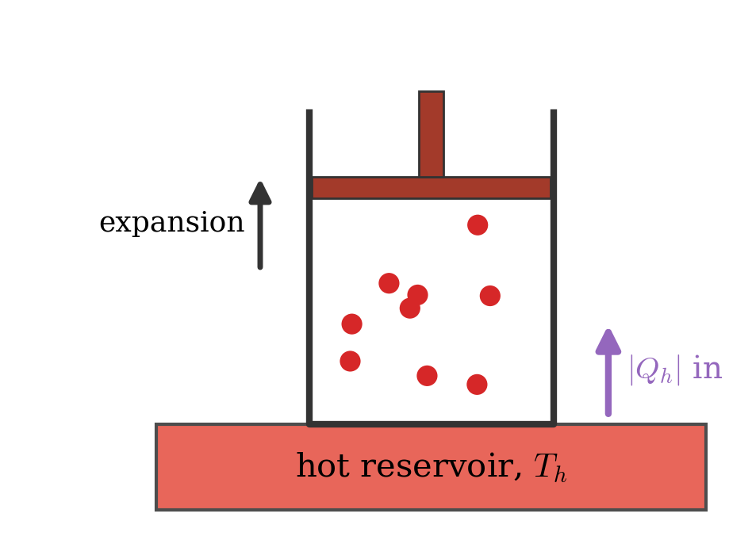
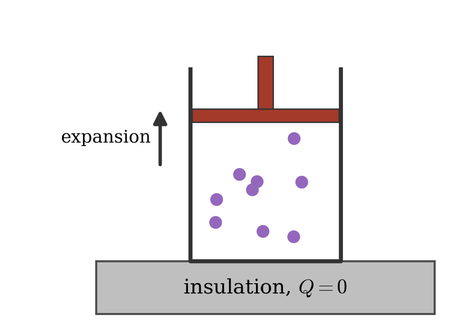
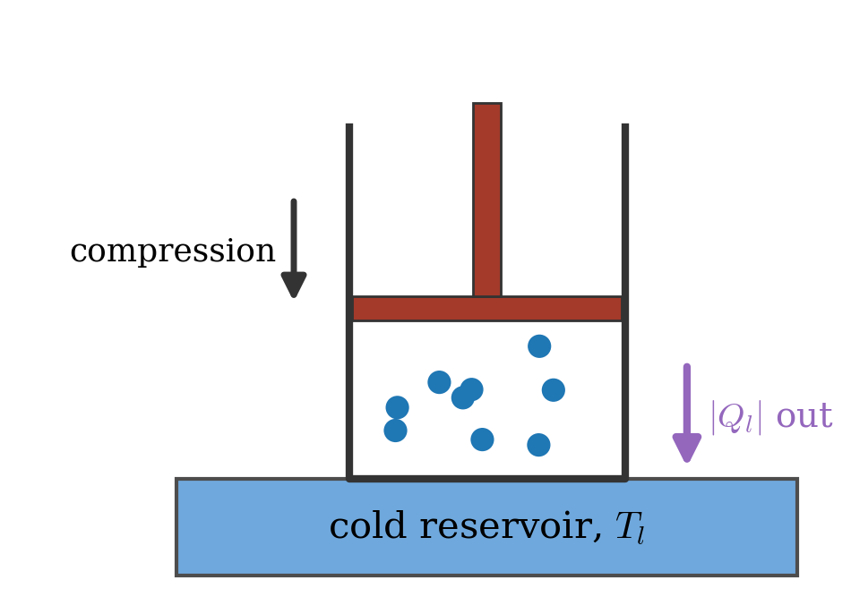
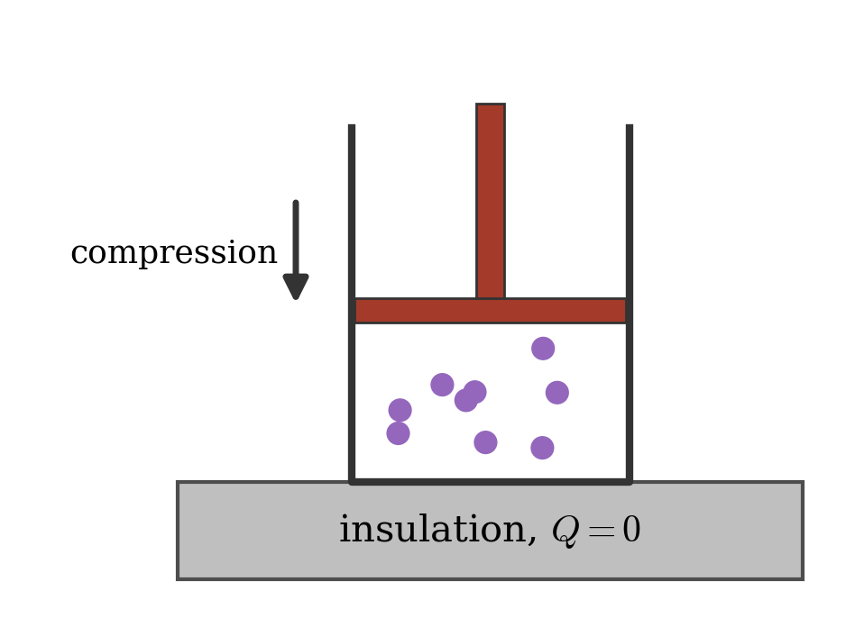
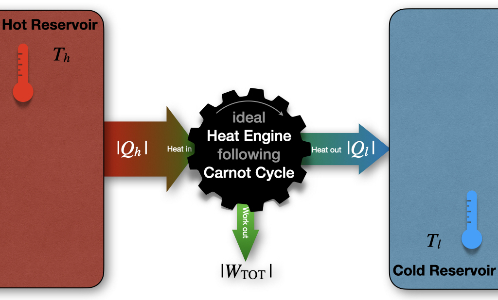
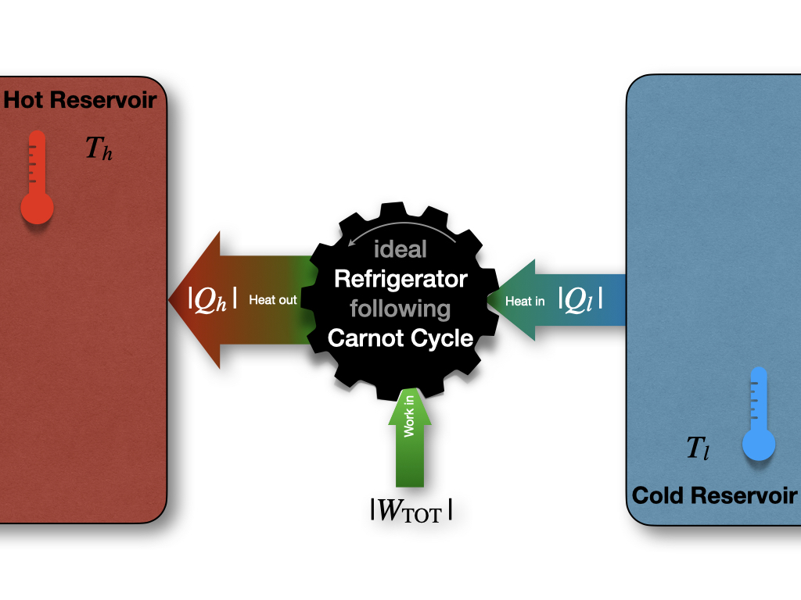

5 Thermodynamic Cycles
The first law of thermodynamics places no restrictions on the conversion of energy from one form to another. For example, let’s consider once again the Joule experiment (Figure 3.1). If we design a cycle that goes from the gas on the left chamber only to the gas equilibrated in both chambers and backward, as in Figure 5.1, there are no restrictions imposed on this hypothetical cycle by the first law.

As we saw in section 3.1.1, states 1 and 2 have exactly the same energy at constant temperature. Restricting the analysis to the information contained in the first law, the ideal gas could hypothetically go from state 1 (all gas in the left chamber) to state 2 (gas in both chambers), as well as spontaneously close the cycle back from state 2 to state 1, without external intervention. While the transformation from 1 \(\rightarrow\) 2 is intuitively spontaneous (it’s the same transformation that we considered in section 3.1.1), the backward transformation from 2 \(\rightarrow\) 1 is clearly not as intuitive. In this case, the gas should spontaneously compress back to the left side, leaving a vacuum on the right chamber, without interventions from the outside. This transformation is clearly never observed. A gas just does not spontaneously concentrate on one side of a room, leaving a vacuum on the other side. In fact, when we need to create a vacuum, a lot of energy must be spent. Suppose we use exclusively information contained in the first law. In this case, there is nothing that might suggest a system’s preference to perform the transformation 1 \(\rightarrow\) 2, while preventing the 2 \(\rightarrow\) 1 from happening spontaneously. Both states have the same energy, and
\[ \oint dU=0. \tag{5.1}\]
James Joule himself was indeed convinced that this must be the case and that we don’t observe the backward transformation in practice only because we cannot build ideal machines.1 Another scientist of that era was not convinced. William Thomson, the 1st Baron Kelvin (1824–1907), was unsure about this idea, and invested substantial resources to try to prove Joule wrong.2
The key to resolving the controversy, in favor of Kelvin, came from an unexpected source: the theoretical work of the French military engineer Nicolas Léonard Sadi Carnot (1796–1832), published years before Joule and Kelvin started working on this problem, and largely forgotten until Kelvin and Rudolf Clausius built on it in the late 1840s and 1850s.3 At that time, the importance of steam engines was growing for industrial applications, but a theoretical perspective was lacking. Carnot was convinced that a scientific understanding of heat engines was necessary to improve their efficiency.
5.1 Carnot Cycle
The main contribution of Carnot to thermodynamics is his abstraction of the steam engine’s essential features into a more general and idealized heat engine. The definition of Carnot’s idealized cycle is as follows:
Definition 5.1 A Carnot cycle is an idealized process composed of two isothermal and two adiabatic transformations. Each transformation is either an expansion or a compression of an ideal gas. All transformations are assumed to be reversible, and no energy is lost to mechanical friction.
A Carnot cycle connects two “heat reservoirs” at temperatures \(T_h\) (hot) and \(T_l\) (low), respectively. The reservoirs have a large thermal capacity so that their temperatures are unaffected by the cycle. The system is composed exclusively of the ideal gas, which is the only substance that changes temperature throughout the cycle. If we report the four transformations of a Carnot cycle on a \(PV\) diagram, we obtain the following plot:

5.1.1 Stage 1: isothermal expansion \(A \rightarrow B\)

Starting the analysis of the cycle from point \(A\) in Figure 5.2, (figure 5.3)(https://en.wikipedia.org/wiki/Carnot_cycle), and have been generated and distributed by Author BlyumJ under CC-BY-SA license.] the first transformation we encounter is an isothermal expansion at \(T_h\). Since the transformation is isothermal:
\[ \Delta U_1 = \overbrace{W_1}^{<0} + \overbrace{Q_1}^{>0} = 0 \Rightarrow Q_1 = -W_1, \tag{5.2}\]
and heat and work can be calculated for this stage using eq. 2.20:
\[ \begin{aligned} Q_1 & = \left| Q_h \right| = nRT_h \overbrace{\ln \frac{V_B}{V_A}}^{>0 \text{ since } V_B>V_A} > 0, \\ W_1 & = -Q_1 = - nRT_h \ln \frac{V_B}{V_A} < 0, \end{aligned} \tag{5.3}\]
where we denoted \(\left| Q_h \right|\) the absolute value of the heat that gets into the system from the hot reservoir.
5.1.2 Stage 2: adiabatic expansion \(B \rightarrow C\)

The second transformation is an adiabatic expansion between \(T_h\) and \(T_l\). Since we are at adiabatic conditions:
\[ Q_2 = 0 \Rightarrow \Delta U_2 = W_2, \tag{5.4}\]
and the negative energy (expansion work) can be calculated using:
\[ \Delta U_2 = W_2 = n \underbrace{\int_{T_h}^{T_l} C_V dT}_{<0 \text{ since } T_\mathrm{l}<T_\mathrm{h}} < 0. \tag{5.5}\]
5.1.3 Stage 3: isothermal compression \(C \rightarrow D\)

The third transformation is an isothermal compression at \(T_l\). The formulas are the same as those used for stage 1, but they will result in heat and work with reversed signs (since this is a compression):
\[ \Delta U_3 = \overbrace{W_3}^{>0} + \overbrace{Q_3}^{<0} = 0 \Rightarrow Q_3 = -W_3, \tag{5.6}\]
and:
\[ \begin{aligned} Q_3 & = -\left| Q_l \right| = nRT_l \overbrace{\ln \frac{V_D}{V_C}}^{<0 \text{ since } V_D<V_C} < 0 , \\ W_3 & = -Q_3 = - nRT_l \ln \frac{V_D}{V_C} > 0, \end{aligned} \tag{5.7}\]
where \(\left| Q_l \right|\) is the absolute value of the heat that gets out of the system to the cold reservoir (\(Q_3 = -\left| Q_l \right|\) being the heat entering the system).
5.1.4 Stage 4: adiabatic compression \(D \rightarrow A\)

The fourth and final transformation is an adiabatic compression that restores the system to point \(A\), bringing it from \(T_l\) to \(T_h\). Similarly to stage 2:
\[ Q_4 = 0 \Rightarrow \Delta U_4 = W_4, \tag{5.8}\]
since we are at adiabatic conditions. The energy associated with this process is now positive (compression work), and can be calculated using:
\[ \Delta U_4 = W_4 = n \underbrace{\int_{T_l}^{T_h} C_V dT}_{>0 \text{ since } T_\mathrm{h}>T_\mathrm{l}} > 0. \tag{5.9}\]
Notice how \(\Delta U_4 = - \Delta U_2\) because \(\int_x^y=-\int_y^x\).
5.2 Energy, Heat, and Work in the Carnot Cycle
Summarizing the results of the previous sections, the total amount of energy for a Carnot cycle is:
\[ \begin{aligned} \Delta U_{\text{TOT}} & = \Delta U_1+\Delta U_2+\Delta U_3+\Delta U_4 \\ & = 0 + n \int_{T_h}^{T_l} C_V dT + 0 + n \int_{T_l}^{T_h} C_V dT \\ & = n \int_{T_h}^{T_l} C_V dT - n \int_{T_h}^{T_l} C_V dT = 0 \\ \end{aligned} \tag{5.10}\]
which is zero, as it must be for any cycle, since \(\oint dU=0\). Notice how the result comes about: the two isothermal stages do not change the energy of an ideal gas, while the energy lost by the gas in the adiabatic expansion (from \(T_h\) to \(T_l\)) is exactly regained in the adiabatic compression (from \(T_l\) back to \(T_h\)). The amounts of work and heat, however, are not zero, since \(Q\) and \(W\) are path functions. Adding up the work of the four stages, the two adiabatic terms cancel out for the same reason, and we obtain:
\[ \begin{aligned} W_{TOT} & = W_1+W_2+W_3+W_4 \\ & = - nRT_h \ln \frac{V_B}{V_A} + n \int_{T_h}^{T_l} C_V dT - nRT_l \ln \frac{V_D}{V_C} + n \int_{T_l}^{T_h} C_V dT \\ & = - nRT_h \ln \frac{V_B}{V_A} - nRT_l \ln \frac{V_D}{V_C}, \\ \end{aligned} \tag{5.11}\]
The two volume ratios are not independent. Since the two adiabats connect the same two temperatures, it can be shown that \(V_C/V_D=V_B/V_A\).4 Therefore, \(\ln\frac{V_D}{V_C}=-\ln\frac{V_B}{V_A}\), and eq. 5.11 reduces to:
\[ W_{TOT} = - nR \left( T_h-T_l \right) \ln \frac{V_B}{V_A} < 0, \tag{5.12}\]
which is negative, because \(T_h>T_l\) and \(V_B>V_A\). Negative work means that the work is done by the system. In other words, the system is performing \(PV\)-work by transferring heat from a hot reservoir to a cold one via a Carnot cycle. On the other hand, for the heat:
\[ \begin{aligned} Q_{\text{TOT}} & = Q_1+Q_2+Q_3+Q_4 \\ & = \left| Q_h \right| + 0 - \left| Q_l \right| + 0 \\ & = nRT_h \ln \frac{V_B}{V_A} + nRT_l \ln \frac{V_D}{V_C} \\ & = nR \left( T_h-T_l \right) \ln \frac{V_B}{V_A} = -W_{TOT}, \end{aligned} \tag{5.13}\]
which is exactly what we should expect from the first law: since \(\Delta U_{\text{TOT}}=0\), all the net heat absorbed by the gas in a cycle must leave it as work. Since the heat is exchanged only in the two isothermal stages, this can be written as:
\[ W_{TOT}=-(Q_1+Q_3), \tag{5.14}\]
and, replacing \(Q_1\) and \(Q_3\) with the absolute values of the heats drawn from the hot and cold reservoirs, \(\left| Q_h \right|\), and \(\left| Q_l \right|\) respectively:
\[ \left| W_{TOT} \right| = \left| Q_h \right| - \left| Q_l \right|, \tag{5.15}\]
or, in other words, more heat is extracted from the hot reservoir than it is put into the cold one. The difference between the absolute value of these amounts of heat gives the total work of the cycle. This process is depicted in Figure 5.7.

Exercise 5.1 Up to this point, we have discussed Carnot cycles working in the hot \(\rightarrow\) cold direction (\(A\) \(\rightarrow\) \(B\) \(\rightarrow\) \(C\) \(\rightarrow\) \(D\) \(\rightarrow\) \(A\)), since this is the primary mode of operation of heat engines that produce work. However, a heat engine could also—in principle—work in the reversed cold \(\rightarrow\) hot direction (\(A\) \(\rightarrow\) \(D\) \(\rightarrow\) \(C\) \(\rightarrow\) \(B\) \(\rightarrow\) \(A\)). Write the equations for heat, work, and energy of each stage of a Carnot cycle going the opposite direction than the one discussed in section 5.1 and section 5.2.
Solution: When the heat engine works in reverse order, the formulas remain the same, but all the signs in front of \(Q\), \(W\), and \(U\) will be reversed. In this case, the total work would get into the system, and heat would be transferred from the cold reservoir to the hot one. Figure 5.7 would be modified as in figure 5.8.

This reversed mode of operation is the basic principle behind refrigerators and air conditioning.
5.3 Efficiency of a Carnot Cycle
The efficiency (\(\varepsilon\)) of a cycle is defined as the ratio between the absolute value of the work extracted from the cycle (\(\left| W_{TOT} \right|\)) and the heat that gets into the system (\(\left| Q_h \right|\)):
\[ \varepsilon = \frac{\left| W_{TOT} \right|}{\left| Q_h \right|} =\frac{-W_{TOT}}{Q_1} \tag{5.16}\]
where the minus sign in front of the work is necessary because the efficiency is defined as a positive number. Replacing eq. 5.14 into eq. 5.16, we obtain:
\[ \varepsilon = \frac{Q_3+Q_1}{Q_1} = 1+\frac{Q_3}{Q_1}. \tag{5.17}\]
If we go back to eq. 5.16 and we replace eq. 5.12 for \(W_{TOT}\) and eq. 5.3 for \(Q_1\), we obtain:
\[ \varepsilon = \frac{nR \left( T_h - T_l \right) \ln V_B/V_A}{nRT_h \ln V_B/V_A} = \frac{T_h-T_l}{T_h}=1-\frac{T_l}{T_h }<1, \tag{5.18}\]
which proves that the efficiency of a Carnot cycle is strictly smaller than 1.5 In other words, no cycle can convert 100% of the heat into work it extracts from a hot reservoir. This finding had remarkable consequences on the entire thermodynamics field and set the foundation for the introduction of entropy. We will use eq. 5.16 and eq. 5.18 for this purpose in the next chapter, but we conclude the discussion on Carnot cycles by returning to Lord Kelvin. In 1851 he used this finding to formulate his statement “It is impossible for a self-acting machine, unaided by any external agency, to convey heat from one body to another at a higher temperature. It is impossible, by means of inanimate material agency, to derive mechanical effect from any portion of matter by cooling it below the temperature of the coldest of the surrounding objects.”6 This statement conclusively disproved Joule’s original theories and demonstrated that there is some fundamental principle to govern the flow of heat beyond the first law of thermodynamics.
5.4 Chapter Review
5.4.1 Study Questions
1. What does the first law of thermodynamics say about a gas that spontaneously compresses back into one side of the Joule apparatus?
- It forbids it, since energy would not be conserved.
- It requires work to be done on the gas.
- It requires heat to flow out of the gas.
- Nothing: the process would conserve energy, so the first law does not forbid it.
- It shows that the process is spontaneous.
2. What transformations make up a Carnot cycle?
- Two isochoric and two isobaric transformations.
- Two isothermal and two adiabatic reversible transformations.
- Four isothermal transformations.
- Four adiabatic transformations.
- One isothermal, one adiabatic, one isochoric, and one isobaric transformation.
3. What happens during the isothermal expansion at \(T_h\) in a Carnot cycle?
- \(\Delta U = 0\), heat is absorbed from the hot reservoir, and the same amount of energy leaves as work.
- No heat is exchanged.
- The temperature drops from \(T_h\) to \(T_l\).
- Heat is released to the cold reservoir.
- Work is done on the gas.
4. What happens during the adiabatic expansion in a Carnot cycle?
- Heat is absorbed from the hot reservoir.
- The internal energy stays constant.
- Heat is released to the cold reservoir.
- The volume decreases.
- No heat is exchanged, the gas performs work, and its temperature drops from \(T_h\) to \(T_l\).
5. What is the total change in internal energy for a complete Carnot cycle?
- \(nR(T_h-T_l)\ln\frac{V_B}{V_A}\).
- \(nC_V(T_h-T_l)\).
- Zero, since the internal energy is a state function.
- Equal to the total work.
- Equal to the heat absorbed from the hot reservoir.
6. What is the total work of a Carnot cycle?
- \(W_{TOT} = nR(T_h-T_l)\ln\frac{V_B}{V_A}\).
- \(W_{TOT} = -nR(T_h-T_l)\ln\frac{V_B}{V_A}\).
- \(W_{TOT} = 0\).
- \(W_{TOT} = nRT_h\ln\frac{V_B}{V_A}\).
- \(W_{TOT} = nC_V(T_h-T_l)\).
7. How is the efficiency of a heat engine defined?
- \(\varepsilon = \frac{|Q_h|}{|W_{TOT}|}\).
- \(\varepsilon = \frac{|Q_l|}{|Q_h|}\).
- \(\varepsilon = \frac{|W_{TOT}|}{|Q_l|}\).
- \(\varepsilon = \frac{|W_{TOT}|}{|Q_h|}\).
- \(\varepsilon = \frac{T_h}{T_l}\).
8. What is the efficiency of a Carnot cycle in terms of the reservoir temperatures?
- \(\varepsilon = 1-\frac{T_l}{T_h}\).
- \(\varepsilon = 1-\frac{T_h}{T_l}\).
- \(\varepsilon = \frac{T_h}{T_l}\).
- \(\varepsilon = \frac{T_h-T_l}{T_l}\).
- \(\varepsilon = 1\).
9. Why is the efficiency of a Carnot cycle always smaller than 1?
- Because of friction in the engine.
- Because the gas is not ideal.
- Because heat is a state function.
- Because the cycle is irreversible.
- Because it would be 1 only if \(T_l=0\;\text{K}\) or \(T_h=\infty\), which are impossible.
10. What happens when a Carnot cycle is run in reverse?
- It produces more work than the forward cycle.
- It reaches 100% efficiency.
- Work is put into the system, and heat is moved from the cold reservoir to the hot one, as in a refrigerator.
- Heat flows from the hot reservoir to the cold one without work.
- It violates the first law.
Either because we don’t really have ideal gases, or because we are unable to construct mechanical devices without loss, or in general because of other experimental factors.↩︎
Interestingly enough, both Joule and Lord Kelvin are now recognized as key figures in the development of thermodynamics and science in general. So much so, that the energy unit and the temperature unit in the SI system are named after them.↩︎
Carnot’s lone book, the Réflexions sur la Puissance Motrice du Feu (“Reflections on the Motive Power of Fire”) was published in France in 1824, the same year Kelvin was born and just 6 years after Joule’s birth.↩︎
This relation follows from the equation of an adiabatic transformation of an ideal gas, which we do not derive in this book. We will take it as given.↩︎
Eq. 5.18 can be equal to 1 only if \(T_l=0 \; \text{K}\) or \(T_h=\infty\), two conditions that are both equally impossible.↩︎
Thomson W. Transactions of the Royal Society of Edinburgh. 1851 XX 261–268, 289–298..↩︎